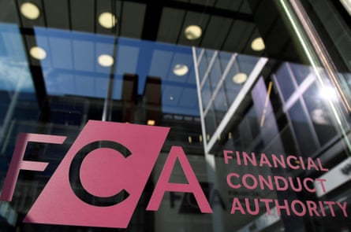

A dverts claiming consumers could be entitled to compensation for mis-sold car finance are popping up everywhere. “You could be owed thousands … File your car finance claim today” is a typical call to action.
With only weeks to go, however, until we find out whether there could be payouts for millions of people, there are warnings that signing up with a claims management company (CMC) could be a bad idea.
The payment protection insurance (PPI) debacle led to claims firms pocketing billions of pounds of the compensation paid to victims, and it seems some are keen to cash in on this latest consumer issue.
It has been said the scandal could result in a £44bn bill for lenders , and this week a survey revealed that more than 23 million people believe they could be due some compensation for a mis-sold car loan.
However, the main UK regulator, the Financial Conduct Authority (FCA), told Guardian Money: “Consumers should be aware that by signing up now with a CMC or law firm, they may end up paying for a service they do not need and losing up to 30% of any money they may receive.”
The amount that can be swallowed up in fees is actually up to 36%, as claims companies can charge VAT on top of a percentage cap applied by the FCA. As we explain later, there is a mechanism that allows some law firms to charge even more.
Here we recap the story so far and run through your options.
How we got here
This is all about the alleged large-scale mis-selling of car loans involving the payment of secret commissions to car dealers and – it would appear – millions of car buyers unknowingly paying more for their finance than they should have.
Across the UK, an estimated 80% to 90% of new cars, and an increasing number of used vehicles, are bought with motor finance, by which we typically mean personal contract purchase plans and hire purchase agreements.
Everyone is anxiously awaiting a ruling from the supreme court that is expected some time this month. The FCA has said that if, after the judgment, it concludes that consumers have lost out, it is likely it will consult on an industry-wide consumer compensation scheme.
In broad terms, the people who appear to have the best chance of getting compensation are those who used car finance to buy a new or secondhand motor vehicle – for example, a car, van or motorbike – before 28 January 2021 (and, we think, after April 2007), where the finance included something known as a discretionary commission arrangement (DCA).
However, a court of appeal ruling last autumn sent shock waves through the sector as it suggested anyone with any type of car finance that included commission that was not properly disclosed could be owed money.
So it is possible the FCA could set the scope of any scheme to include other types of car finance where people were not given all the necessary information.
It has previously indicated that for a typical £10,000, four-year car finance deal where a DCA was used, a customer might have paid £1,100 too much interest . However, there could be a requirement for firms to pay interest on top of that, which could add up to a lot if it is several years’ worth.
If you think you are affected you could do one of the following.
1 ) Wait to see how things pan out
This is the easiest option, and we shouldn’t have long to wait before we get a lot more clarity.
The FCA says it will confirm within six weeks of the supreme court judgment whether it is proposing to launch a compensation scheme. If so, it will carry out a consultation before making its final decision, with any scheme likely to commence next year.
The FCA says it will aim to make any scheme “easy to take part in, without needing to use a CMC or law firm”.
The FCA will confirm within six weeks of the supreme court judgment whether it is proposing to launch a compensation scheme.Photograph: Toby Melville/Reuters
It has been suggested that if a scheme does go ahead, banks and other lenders will have to proactively contact all their customers who meet the mis-selling criteria and offer them compensation.
Martin Lewis, the founder of MoneySavingExpert.com, says that would mean “ people won’t need to complain – they will be paid out an amount dictated by the FCA to firms based on their situation”.
Of course we will need to wait to see what happens.
2 ) Lodge a complaint now
Let’s first talk about the people whose car finance included a DCA: some would say that logging a complaint now means you are “in the system”.
It gives the company concerned a chance to track down your information, and you can point out things that may help with that. If there is a problem – for example, the firm says it has mislaid or deleted your data – it is probably better to know now rather than later.
“Submitting a complaint could be helpful if you’ve changed your contact details or moved house since taking out your car finance, as the information you provide will help the providers match you with your car finance agreement,” the MoneySavingExpert website says. It adds that logging a complaint now could help reduce the risk of being ruled out if a time limit is imposed in future.
It has a free tool on its website that it says can help people check if they had a DCA and, if they did, get their complaint logged. You have to answer a few questions on the details of your car finance, then it creates an email for you to send to the relevant lender.
Or you can complain yourself. It is free and simple, the FCA says. You will need to complain to the company you were paying each month, and ideally do it in writing. If you don’t get a response or your complaint is rejected, you can take it to the free Financial Ombudsman Service. Official websites such as the government-backed MoneyHelper have guides to how to do this.
In terms of non-DCA car finance complaints, things are now a lot less clear. However, you can still put in a complaint now if you believe you were not told about commission and may have paid too much for your finance.
Much of the previous advice applies to these people, too, although for non-DCA complaints the end date is looking like October 2024. MoneySavingExpert has a different free tool for these people that could be useful to you.

In the UK an estimated 80% to 90% of new cars, and an increasing number of used vehicles, are bought with motor finance.Photograph: SolStock/Getty Images
The FCA has given companies until after 4 December this year before they have to start responding to any type of car finance commission complaint, so you may not hear anything substantial for a while. However, your provider should send you an acknowledgment within eight weeks.
The Financial Ombudsman Service has about 100,000 motor finance commission cases lodged with it, with the legal proceedings affecting its ability to issue final decisions in these cases.
3 ) Use a claims company or law firm
It is a busy time for companies offering to help people make a claim for car finance compensation, usually on a “no win, no fee” basis. There are lots jostling for our attention, from one-man-band operations to high-profile consumer law firms. Many of the adverts talk of sizeable potential refunds.
However, as highlighted previously, the FCA has made its views very clear on this potential route to compensation. It adds: “We’ve seen law firms and CMCs touting highly speculative figures to sign people up for motor finance claims.”
The MoneyHelper site advises people to “avoid using a claims management company to get any compensation you’re owed”.
Some CMCs are merely fishing for customer “leads”, which are then passed on to third-party law firms for a fee.
A claims company will usually be regulated by either the FCA or the Solicitors Regulation Authority (SRA) – it should say at the bottom of its website.
In both cases the maximum fee you can be charged is 30% (36% including VAT), although solicitors are able to apply to the SRA to charge more for complex claims. That’s a lot of money to give up.
If you are determined to use a firm, you would be best advised to choose one with a proven record of winning cases in this area, such as the solicitors Bott and Co.
Hundreds, if not thousands, of people have taken their cases to court, and in many cases the judge has found in the individual’s favour, although Coby Benson at Bott and Co says: “As far as we’re aware, no firms are now issuing court proceedings. This is because any case will just be ‘stayed’ (placed on hold) by the court until the supreme court has handed down its decision.”
However, he adds: “When we last issued court proceedings, we saw a success rate of 90% and average compensation of about £1,600.”
Benson also says: “The remedy available through the courts is often more generous than that which can be achieved through FCA rules.” That reflects the view that if it does end up setting up a compensation scheme, the FCA will need to balance the interests of consumers, firms and the broader economy. The regulator says that as well as being “fair to consumers who’ve lost out”, any scheme must “ensure the integrity of the motor finance market so it works well for future consumers”.
What are DCAs?
Before 2021, many motor finance lenders allowed brokers – usually car dealers – to adjust the interest rates on the finance deals they offered to customers. The higher the interest rate, the more commission the dealer received, so there was an incentive for them to increase consumers’ costs. This was known as a discretionary commission arrangement.
The Financial Conduct Authority banned DCAs with effect from 28 January 2021 after finding that commission models giving dealers discretion over interest rates could be costing customers about £500m in total more a year than flat fee arrangements. These are where the dealer gets the same commission regardless of the amount of work involved, the credit risk of the customer or the interest rate.
Vehicles on a car dealer’s forecourt.Photograph: MediaWorldImages/Alamy
DCAs were “by far the most common commission arrangement” before they were outlawed: on average, between 2007 and 2020, about three-quarters of all motor finance agreements had a DCA of some sort, according to the FCA.
A number of car finance providers say they never used DCAs. The MoneySavingExpert website carries a list of firms and brands that say this – they include Bank of Scotland, Carmoola, Halifax, Lloyds (excluding Black Horse) and RateSetter.